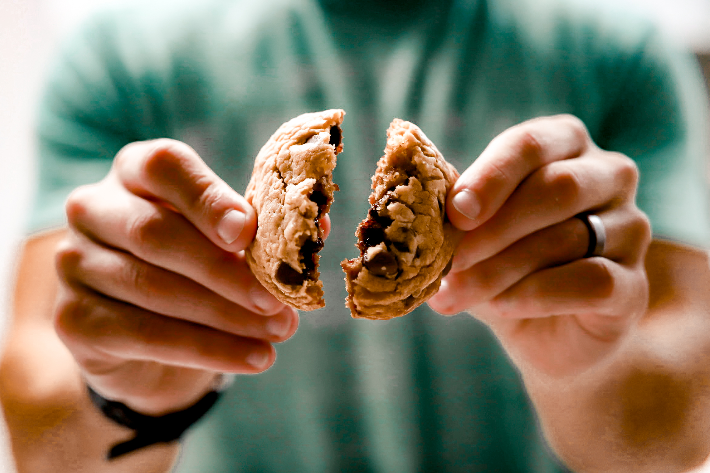
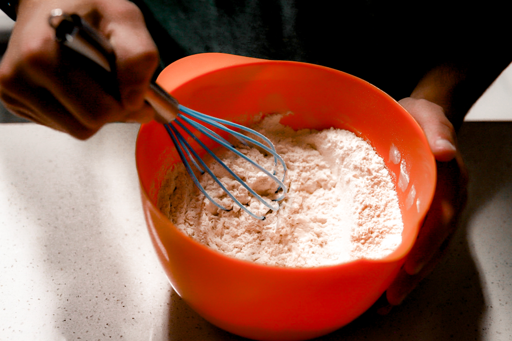
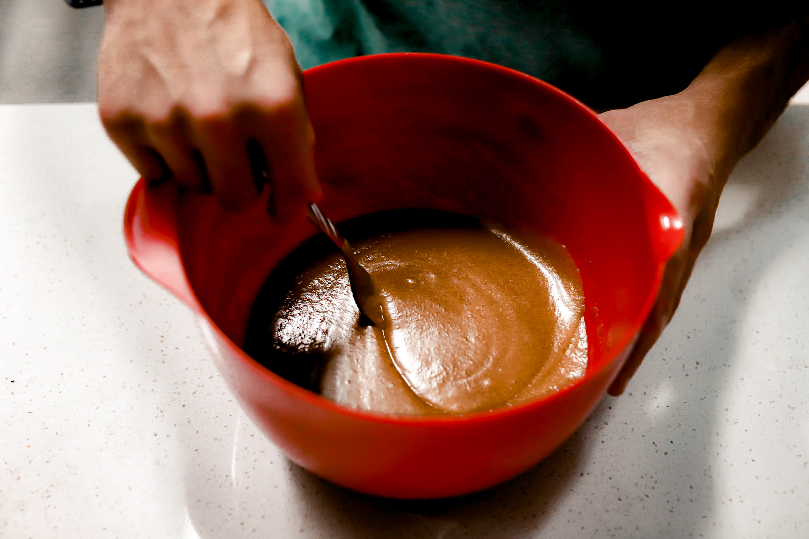
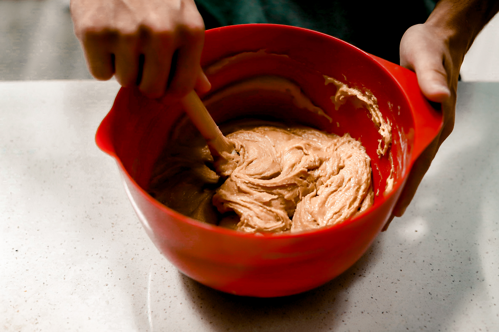
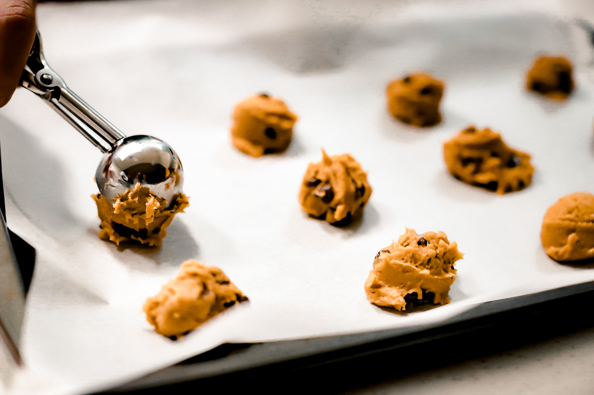
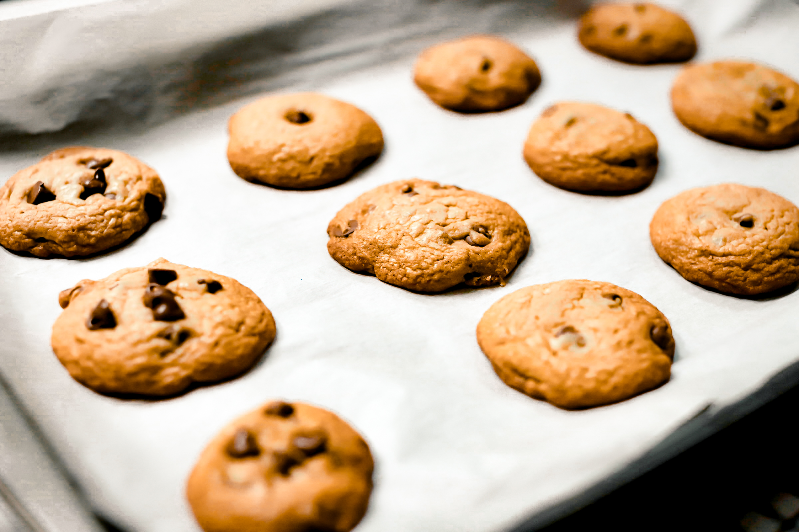

The Best Chocolate Chip Cookie Recipe Around!
"A balance diet is a cookie in each hand." - Barbara Johnson

Step 1 - Gather All ingredients
To start off, the first thing you need to do is collect all of the ingredients
required to make these delicious cookies. The required ingredients are as follows:
- 2 and 1/8 cups all purpose flour
- 1 teaspoon baking soda
- 2 teaspoons cornstarch
- 1 teaspoon salt
- 1 and 1/2 sticks (6 oz) of unsalted butter, melted
- 1 cup dark brown sugar
- 1/2 cup granulated sugar
- 2 large eggs
- 2 teaspoons vanilla extract
- 1 and 1/2 cups of semi-sweet chocolate chips
Step 2 - Whisk Together Dry Ingredients
In a medium mixing bowl, whisk together the flour, baking soda, cornstarch, and salt. You will want to make sure the ingredients are equally distributed throughout the entire bowl. Set the bowl aside for now.
Step 3 - Mix Other Ingredients Together
In a large mixing bowl, mix together the melted butter, the dark brown sugar, and the granulated sugar until combined. Next, beat in the eggs and the vanilla extract until just combined.
Step 4 - Combine All Ingredients
Using the large mixing bowl as the primary bowl, slowly add in the dry ingredients from Step 2 while mixing. Once the entirety of the dry ingredients is mixed in, continue mixing just until there are no more flour clumps remaining. Fold in the chocolate chips. Cover with plastic wrap and refrigerate for 45 minutes. *Keep in mind that you may want to preheat oven before the 45 minutes pass*
Step 5 - Preheat Oven and Place Cookies
Preheat oven to 350°F. Place oven racks in the middle of the oven to make sure heat is evenly distributed. Line baking sheets with parchment paper. Use a cookie scooper or spoon to scoop roughly ¼ cup of cookie dough at a time, roll the cookie into a ball, and place onto the baking sheet. Leave at least 2 inches of space in between cookies to leave room for expansion.
Step 6 - Bake in Oven
Bake in oven for 10 minutes and the check cookies for completion. Depending on the oven, the cookies may have to be cooked for an additional 5 minutes until complete. Finished cookies will have expanded and will have a crisp, golden edge. Let the cookies cool on the baking sheets for around 15 minutes. Enjoy!